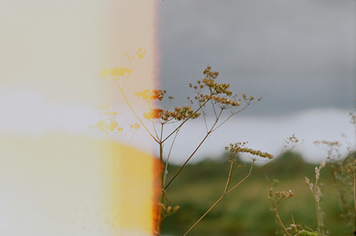

Немного лишней личной информации
Мне 18, я из Перми.
Немного рисую, немного фотографирую на пленку.
Умею высыпаться за три часа. В любое время суток плохо шучу.
Хорошо знаю английский, но все равно смотрю "Шерлока" с субтитрами.

Увлечения
А сон можно назвать увлечением?
Я читаю все подряд, но больше всего я люблю Дэвида Митчелла и Филипа Пулмана.
Трепетно отношусь к произведениям Анны Ахматовой и очень ее уважаю.
После пяти попыток сделать школьный доклад о творчестве Бродского полюбила и его.
Люблю время от времени поплакать над "Привидением".
Практически все хорошие сериалы, которые я смотрела, в итоге закрывают.
Я ужасно пою, но не могу представить свою жизнь без музыки.
Обожаю анекдоты про художников и картины Куинджи.